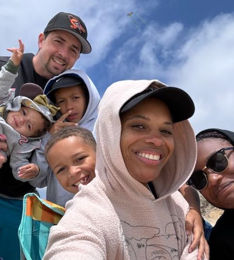

About Me
My name is Mathew Frenette, you can call me Matt. I live in the state of California in the United States. Me and my wife Jasmine have been married for 12 years and have 4 children named Anala, Jace, Davin, and Cherise. I've worked for the last 10 years at Telsa and plan to get my degree in software development to alter and continue my career with Tesla.
California, USA
I was born in California and it has been my home for most of my life except for a few months I spent in Arizona. California is full of things to do. We have beaches, mountains, deserts, forests, and just about everything in between. One of my favorite things about California is it's diversity. There are so many different nationalities and cultures that we get to enjoy through cuisine, commerse, and conversation.